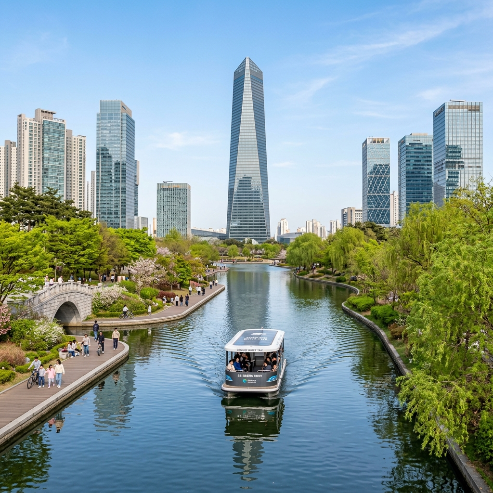
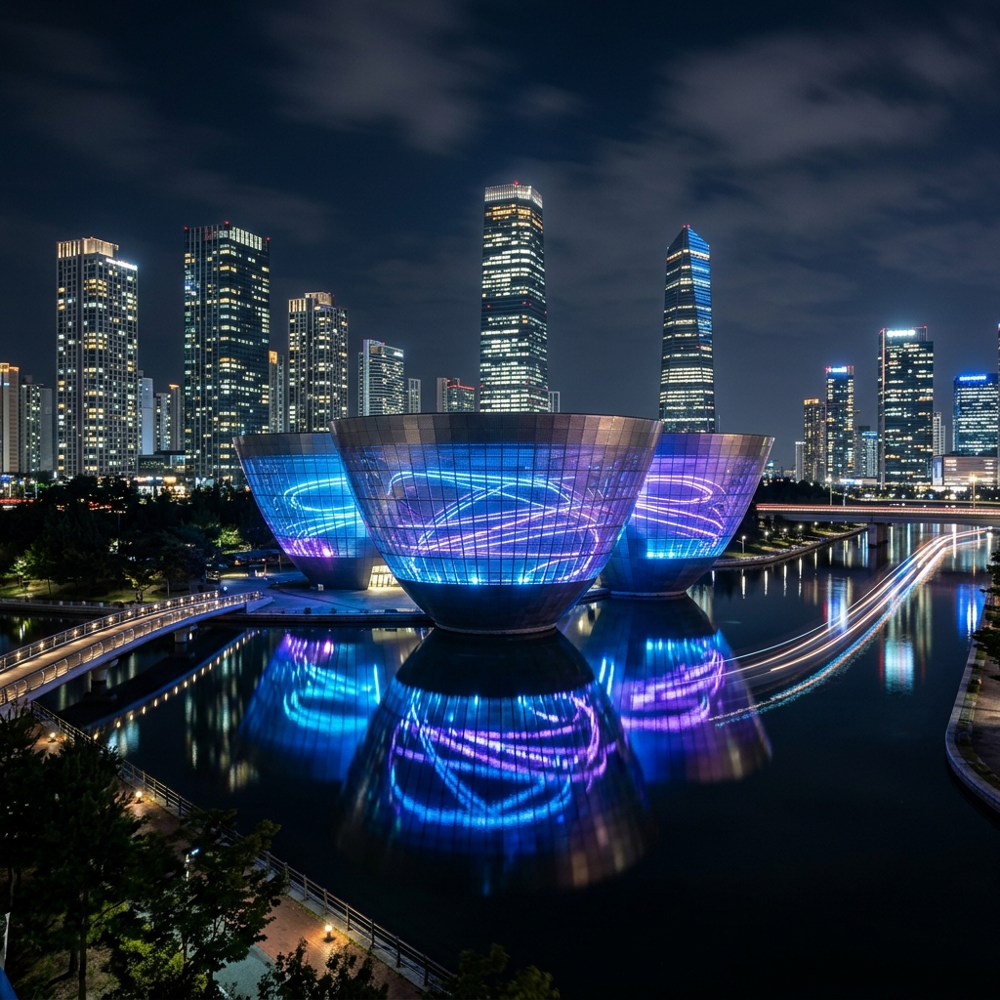
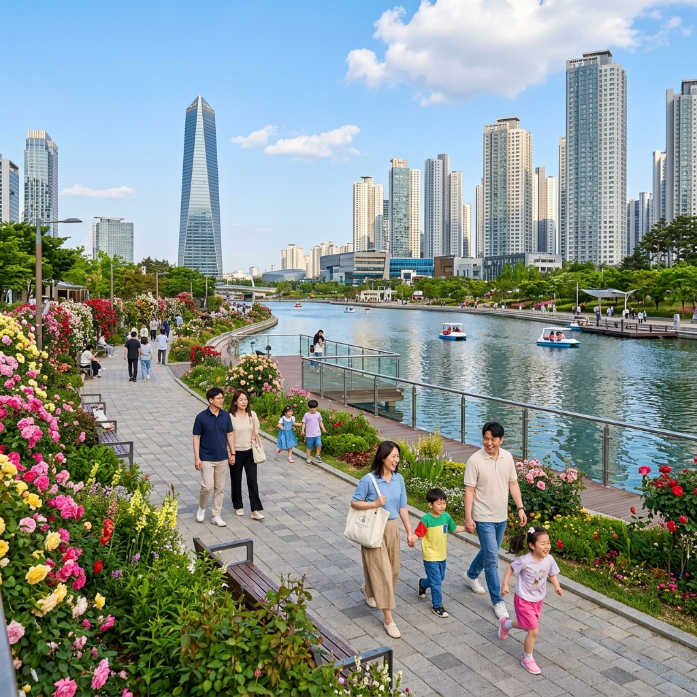

인천 송도 센트럴파크 2026: 트라이볼 야경과 수상택시 봄 가족 코스 & 5월 봄꽃 산책 완벽 가이드
인천국제공항에서 자동차로 20분, 서울에서도 1시간 이내에 닿는 송도 센트럴파크(Songdo Central Park)는 대한민국에서 처음으로 바닷물을 끌어들여 조성한 해수 수로(海水水路)가 흐르는 독특한 도심 공원입니다. 뉴욕의 센트럴파크에서 영감을 받아 설계된 이 공원은 총면적 약 40만㎡로, 공원 내 수로를 오가는 수상택시(Water Taxi)와 인천 경제자유구역 랜드마크인 트라이볼(Tri-bowl)의 야경이 연중 방문객을 끌어모읍니다. 5월은 신록이 물오르고 따사로운 햇살이 수면에 반짝이는 최고의 방문 시기입니다. 가족 나들이부터 데이트 코스, 사진 여행까지 모든 수요를 충족시키는 완벽한 가이드를 준비했습니다.
| 항목 | 내용 |
|---|
| 위치 | 인천광역시 연수구 컨벤시아대로 160 (센트럴파크역 인근) |
| 공원 이용 | 연중무휴 24시간 개방 (무료) |
| 수상택시 | 화~일 10:00~20:00 (월요일 휴무) / 1인 2,000원 |
| 트라이볼 야경 | 일몰 후~밤 10시 (연중 무료 외부 감상) |
| 교통 | 인천지하철 1호선 센트럴파크역 하차, 도보 5분 |
| 주차 | 센트럴파크 주변 유료 주차장 다수 (30분 500원 내외) |
🌊 1. 송도 센트럴파크의 탄생 — 바닷물이 흐르는 도심 공원
송도 센트럴파크가 다른 도심 공원과 근본적으로 다른 이유는 공원 한가운데를 흐르는 수로가 담수(淡水)가 아닌 해수(海水)라는 점입니다. 인근 인천 앞바다에서 끌어들인 바닷물이 특수 정화 시스템을 거쳐 수로에 공급되기 때문에, 수질이 맑고 조류(潮流)에 따라 수위가 미세하게 변하는 독특한 현상을 볼 수 있습니다. 이 해수 수로 덕분에 공원 내에는 도심 속에서 해양 생물을 관찰하는 이색적인 경험도 가능합니다. 게와 망둑어 등 소형 갑각류와 어류가 실제로 서식하고 있어 아이들이 돋보기를 들고 수면을 들여다보는 장면이 종종 목격됩니다.
공원은 크게 북쪽 구역(트라이볼, 야외 수상무대 중심)과 남쪽 구역(가족 피크닉 구역, 어린이 놀이터, 산책로 중심)으로 나뉩니다. 두 구역을 잇는 수로를 따라 총 4개의 수상택시 정류장이 운영되며, 수상택시를 타고 이동하면 공원의 스케일을 실감할 수 있습니다. 5월에는 공원 경계부를 따라 심어진 장미, 수국, 초화류가 차례로 개화해 공원 전체가 화원처럼 변합니다. 특히 센트럴파크역 방향 입구 쪽의 장미 화단은 5월 중순 이후 만개 상태에 이르며, 수로와 꽃이 함께 담기는 포토존으로 인기가 높습니다.
🚤 2. 수상택시 완벽 탑승 가이드
송도 센트럴파크의 상징이자 가장 인기 있는 체험은 단연 수상택시입니다. 전기 동력으로 구동되는 소형 선박에 최대 10명이 탑승할 수 있으며, 운전기사(선장)가 공원 수로 4개 정류장을 오가며 승객을 실어 나릅니다. 승선 비용은 1인당 2,000원이며 현금 또는 교통카드로 결제합니다.
탑승 방법은 간단합니다. 수상택시 정류장(①커낼워크입구, ②A공원, ③C공원, ④트라이볼 앞)에서 대기하다가 빈 자리가 생기면 승선하면 됩니다. 성수기(5~10월 주말)에는 30~40분 대기가 발생하기도 합니다. 날씨가 좋은 날에는 공원 한가운데서 바라보는 송도 고층 건물들의 파노라마가 매우 인상적이므로, 차를 타고 지나가는 것보다 반드시 탑승을 권장합니다. 어린 아이와 함께라면 구명조끼 착용이 의무화되어 있으니 참고하세요.

[송도 센트럴파크 수상택시] / AI 제작 이미지
🏛 3. 트라이볼(Tri-bowl) 야경 감상 완전 가이드
송도 센트럴파크를 대표하는 랜드마크 트라이볼(Tri-bowl)은 세 개의 그릇 형태 구조물이 서로 맞물린 독창적인 외관으로, 인천경제자유구역을 상징하는 건축물입니다. 낮에는 스테인리스 스틸 외관이 태양 빛을 반사하며 금속성 광채를 발산하지만, 해가 진 뒤 LED 조명이 켜지면 완전히 다른 모습을 보여줍니다. 3~4가지 테마 조명이 매일 밤 순환 상영되며, 수면에 반영된 트라이볼 야경은 송도를 대표하는 인스타 성지가 된 지 오래입니다.
야경 감상 최고 포인트는 트라이볼 바로 앞 수변 데크입니다. 수면이 잔잔한 날에는 트라이볼의 조명이 물 위에 완벽하게 반영되어 마치 두 개의 트라이볼이 마주 보는 듯한 장면이 연출됩니다. 삼각대를 세우고 장노출(5~10초) 촬영을 하면 수면의 잔물결이 빛의 띠로 변환되어 환상적인 야경 사진을 얻을 수 있습니다. 트라이볼 내부는 전시 공간으로 운영되며, 공연 또는 전시 일정에 따라 입장이 가능합니다. 2026년 5월 현재 내부 전시 일정은 인천경제자유구역 공식 홈페이지(www.ifez.go.kr)에서 확인하실 수 있습니다.
🌸 4. 5월 봄꽃 산책 코스 & 포토존 추천
5월의 송도 센트럴파크는 공원 내 계절 화단이 가장 화려하게 피어나는 시기입니다. 주요 봄꽃 감상 포인트를 순서대로 안내해 드립니다.
①센트럴파크역 방향 입구 장미 화단: 공원 남쪽 입구 일대에 다양한 품종의 덩굴장미와 관목 장미가 심어져 있습니다. 5월 10일~25일 사이 최성기를 맞으며, 붉은색·분홍색·흰색 장미가 혼재해 화려한 볼거리를 제공합니다. ②수로변 버드나무 산책길: 수로를 따라 이어지는 산책로 양편에 수양버드나무가 5월에 새 잎을 내며 연초록 커튼을 만들어냅니다. 바람이 불면 버드나무 잎이 물결치고 아래로 수로가 반짝이는 풍경은 가히 유럽의 운하 도시를 연상시킵니다. ③A공원 구역 튤립 화단: 4월 말부터 5월 초까지 다양한 품종의 튤립이 만개합니다. 이 시기는 이미 지났을 수 있으나, 후속으로 피는 보름달 팬지와 비올라가 5월 중순까지 이어집니다. ④C공원 구역 자연 경관 구역: 인공 조경이 아닌 자연 식생을 최대한 살린 구역으로, 5월에는 각종 야생화와 신록이 어우러져 도시 속 자연 산책의 느낌을 줍니다.
👨👩👧 5. 아이와 함께하는 포인트 — 온 가족 맞춤 코스
송도 센트럴파크는 인천 경제자유구역 내 주거 단지와 인접해 있어 어린 자녀를 동반한 가족 방문객이 상시 많습니다. 아이들이 특히 좋아하는 포인트를 정리해 드립니다. 우선 수상택시 탑승은 대부분의 아이들이 처음 경험하는 선상 이동으로, 10분 남짓의 짧은 탑승이지만 큰 흥분과 설렘을 선사합니다. 수변 데크에서 물고기 관찰: 수로 변에 쪼그려 앉아 물속을 들여다보면 작은 물고기와 게 등 갑각류를 발견할 수 있습니다. 아이들에게 도시 속 생태 탐험의 기쁨을 선사합니다. C공원 구역 어린이 놀이터: 공원 남쪽 구역에 다양한 놀이 기구를 갖춘 어린이 놀이터가 조성되어 있어, 어른들이 산책하는 동안 아이들이 뛰놀 수 있습니다.
공원 내에서 피크닉을 즐기고 싶다면 C공원 구역의 넓은 잔디밭을 추천드립니다. 주말에는 돗자리를 펴고 도시락을 즐기는 가족들로 가득하며, 근처 롯데마트나 이마트에서 간단한 식재료를 구입해 공원에서 즐기는 방식이 인기입니다.

[송도 트라이볼 야경] / AI 제작 이미지
🍽 6. 주변 맛집 & 카페 추천
송도 센트럴파크 주변은 인천경제자유구역의 핵심 상업 지구로, 다국적 레스토랑과 트렌디한 카페들이 밀집해 있습니다. 공원 북쪽 커낼워크(Canal Walk) 상업 구역에는 이탈리안, 한식, 일식, 아시안 퓨전 등 다양한 레스토랑들이 수로를 바라보며 야외 테라스를 운영하고 있어, 식사 후 공원 산책으로 자연스럽게 이어지는 동선이 만들어집니다.
특별히 추천드리는 카페 이용법은 수로 뷰(View) 테라스가 있는 카페를 선점하는 것입니다. 5월의 맑은 날 오후 3~4시에 이런 카페에 앉아 커피 한 잔을 마시며 수상택시가 지나가는 풍경을 바라보는 것은 송도에서만 경험할 수 있는 도심 힐링입니다. 또한 G-tower(인천경제자유구역청 사옥) 33층 스카이라운지는 무료로 입장 가능하며, 공원과 인천 앞바다를 한눈에 내려다보는 전망을 제공합니다. 방문 시 개방 시간을 사전에 확인하시기 바랍니다.
🚇 7. 교통 & 주차 정보
대중교통: 인천지하철 1호선 센트럴파크역에서 하차 후 1번 또는 4번 출구로 나오면 공원 입구까지 도보 약 5분입니다. 서울 1호선 및 경인선 이용자는 인천역에서 인천지하철로 환승하거나, 버스(인천 버스 노선 다수)를 이용할 수 있습니다. 서울 수서역에서 GTX-B(2027년 개통 예정)가 완공되면 접근성이 더욱 향상될 것으로 기대됩니다.
자가용: 서울 방향에서 올 경우 경인고속도로 → 인천항IC → 신항대로 → 송도국제대로 경유로 약 1시간 10분이 소요됩니다. 공원 인근 주차장은 커낼워크 지하 주차장, 센트럴파크 D공원 주차장 등 총 4,000면 이상의 주차 공간이 마련되어 있으며 30분당 500~600원의 유료 주차입니다. 주말 오후 3시~6시는 주차장 혼잡이 심하므로, 오전 방문을 권장합니다.

[송도 센트럴파크 커낼워크 봄 산책] / AI 제작 이미지
📸 8. 야경 촬영 명당 & 스마트폰 촬영 팁
송도 센트럴파크는 낮과 밤의 표정이 완전히 다른 공간입니다. 낮에는 물과 초록의 자연 공원이지만, 밤이 되면 고층 건물들의 조명과 트라이볼 LED 쇼가 어우러져 SF 영화 속 미래 도시처럼 변합니다. 야경 촬영 명소 3곳을 안내해 드립니다.
①트라이볼 정면 수변 데크: 트라이볼 LED 조명이 수면에 반영되는 최고의 포인트입니다. 수면이 잔잔해지는 밤 8시 이후가 최적 시간대입니다. ②수상택시 정류장 A 주변 부교: 수로 위에 떠 있는 부교에서 양쪽 방향으로 고층 빌딩 야경이 담기는 터널 구도 사진을 찍을 수 있습니다. ③G-tower 전망대: 33층 높이에서 공원 전체 야경을 조감합니다. 트라이볼과 수로, 고층 건물들이 하나의 파노라마에 담기는 광각 야경 촬영이 가능합니다.
스마트폰 야경 촬영 팁을 드립니다. 최신 플래그십 스마트폰의 야간 모드(Night Mode)를 활용하면 별도의 삼각대 없이도 수준 높은 야경 사진을 얻을 수 있습니다. 트라이볼 LED 쇼는 약 10~15분 주기로 패턴이 변하므로, 최소 2~3가지 패턴을 기다려 촬영하는 인내심이 필요합니다.
💡 9. 방문 전 꼭 알아야 할 꿀팁
💡 송도 센트럴파크 방문 전 체크리스트
① 수상택시는 월요일 휴무입니다. 반드시 화~일요일에 방문하세요.
② 수상택시 줄이 길면 반대 방향 정류장에서 타는 역방향 탑승 전략을 활용하면 30분을 절약할 수 있습니다.
③ 트라이볼 야경은 도보로 15~20분 산책 거리이므로, 저녁 방문 시 운동화를 신고 가세요.
④ 공원 내 음식 반입은 자유이나, 음주 및 바베큐 취사는 금지되어 있습니다.
⑤ 야경 감상 후 인근 신세계백화점 지하 식품관을 이용하면 퀄리티 높은 식사와 쇼핑을 이어서 즐길 수 있습니다.
#송도센트럴파크
#인천송도
#수상택시
#트라이볼야경
#인천여행
#5월봄꽃
#송도데이트
#가족나들이
#인천경제자유구역
#도심공원